Principal Investigator
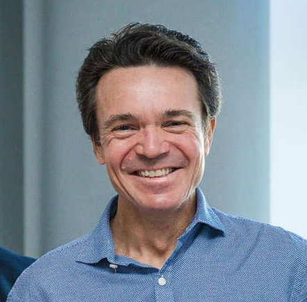
Fulvio Domini
Professor
Department of Cognitive Linguistic and Psychological Sciences at Brown University
email: Fulvio_Domini (at) brown.edu | website
Graduate Students
Ailin Deng
email: Ailin_Deng (at) brown.edu | website
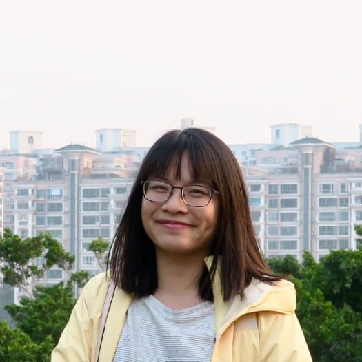
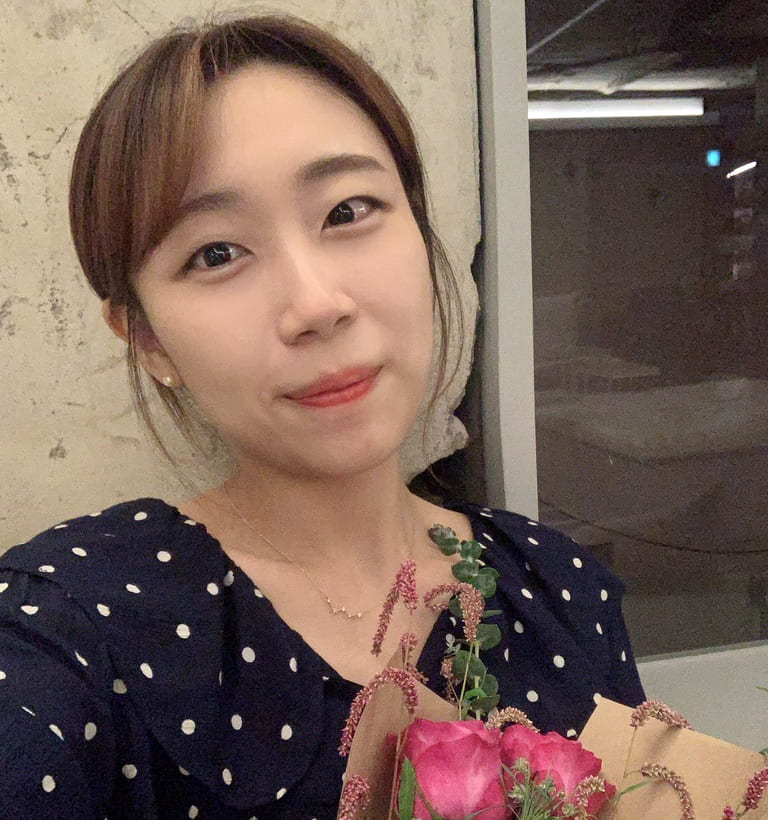
Channy (Chaeeun) Lim
email: Chaeeun_Lim (at) brown.edu | website
Daniel Yu
email: daniel_yu (at) brown.edu | website
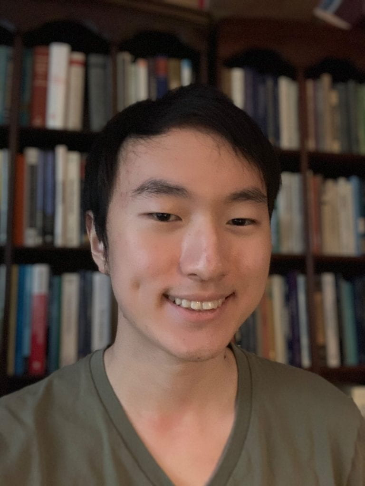
Undergraduate Research Assistants
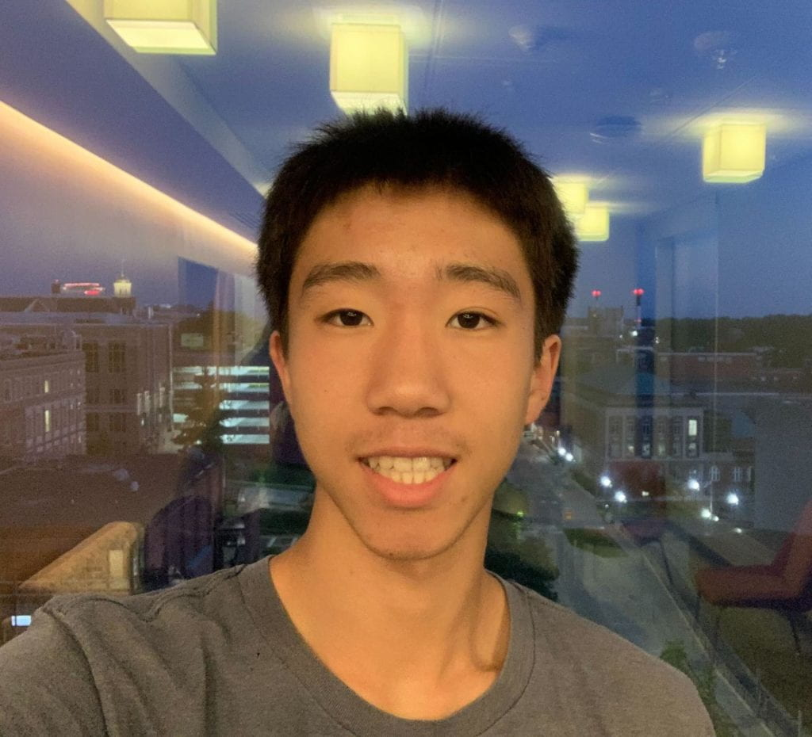
Jeffrey Mu
email: jeffrey_mu (at) brown.edu | website
Sambidha Gurung
email: sambidha_gurung (at) brown.edu | website
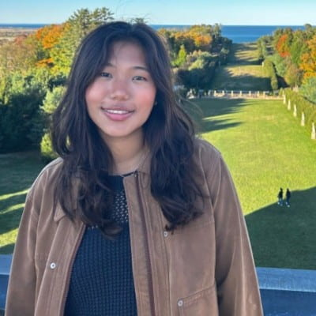
Recent Alumni
Post-doctoral Researchers
2008 – 2012
Associate Professor, University of Trieste
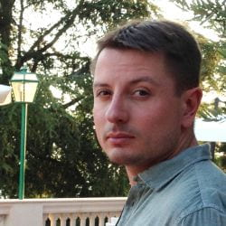
2010 – 2016
Associate Professor, New York University Abu Dhabi
Postdoctoral Researcher, 2012 – 2016
UX Researcher, Booking.com
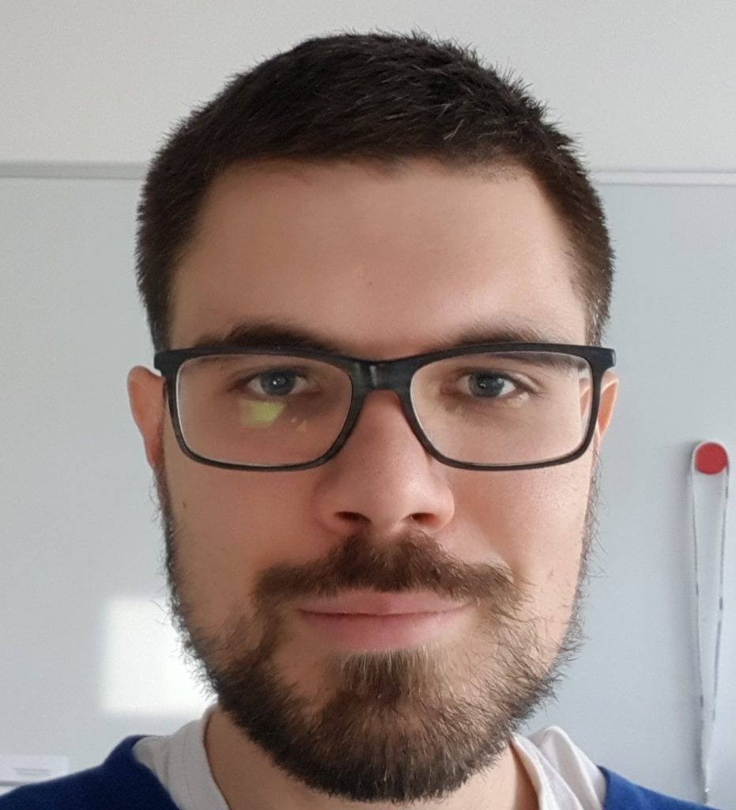
2016 – 2017
Postdoctoral researcher, Technische Universität Chemnitz
2017 – 2025
Postdoctoral researcher, New York University Abu Dhabi
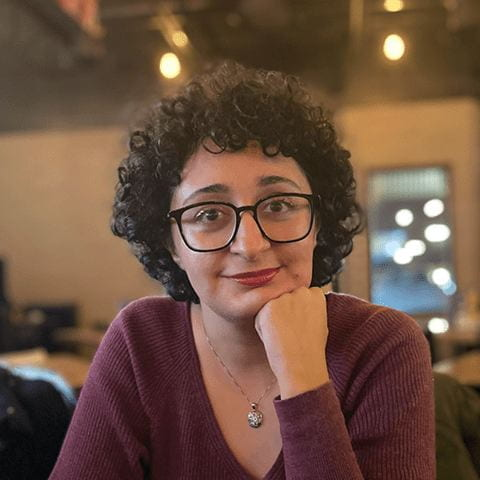
2023 – 2025
Postdoctoral researcher, Université de Montréal
Graduate Alumni
2017 – 2023,
Postdoctoral Researcher, Johns Hopkins University
2016 – 2022,
UX Research Scientist, Meta Reality Labs
2013-2019
Senior Scientist, Exponent
2012-2017
Lecturer, University of Leeds, UK
Undergraduate Alumni
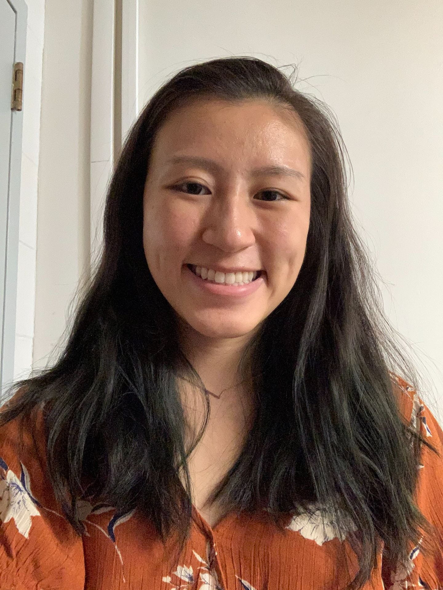
Medical Scribe, Beth Israel Deaconess Medical Center
Alumni
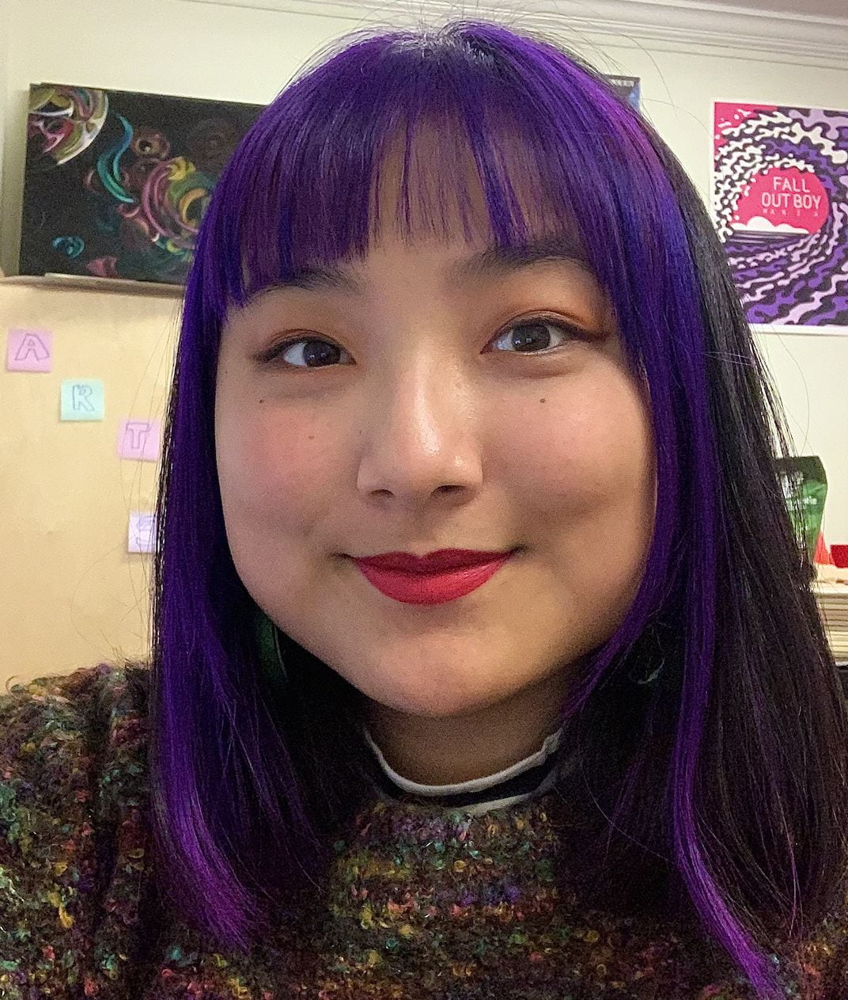
Product Designer,
JP Morgan Chase
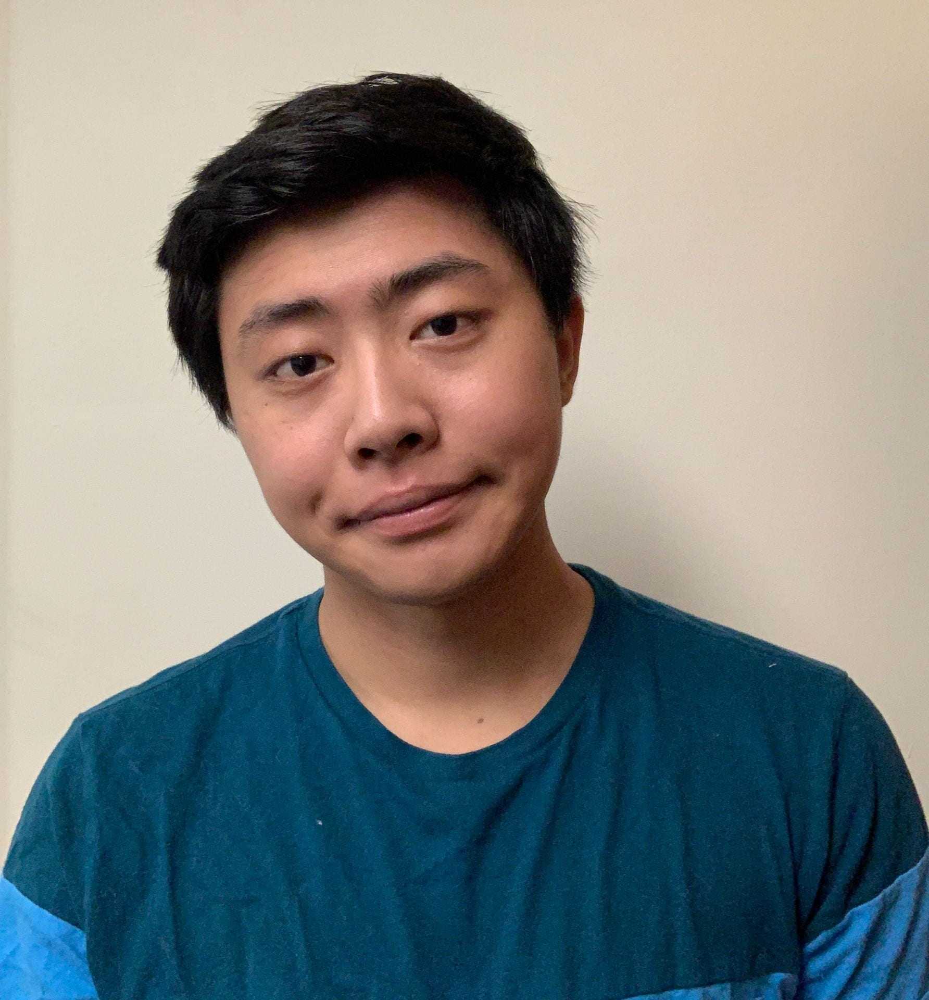
Alumni
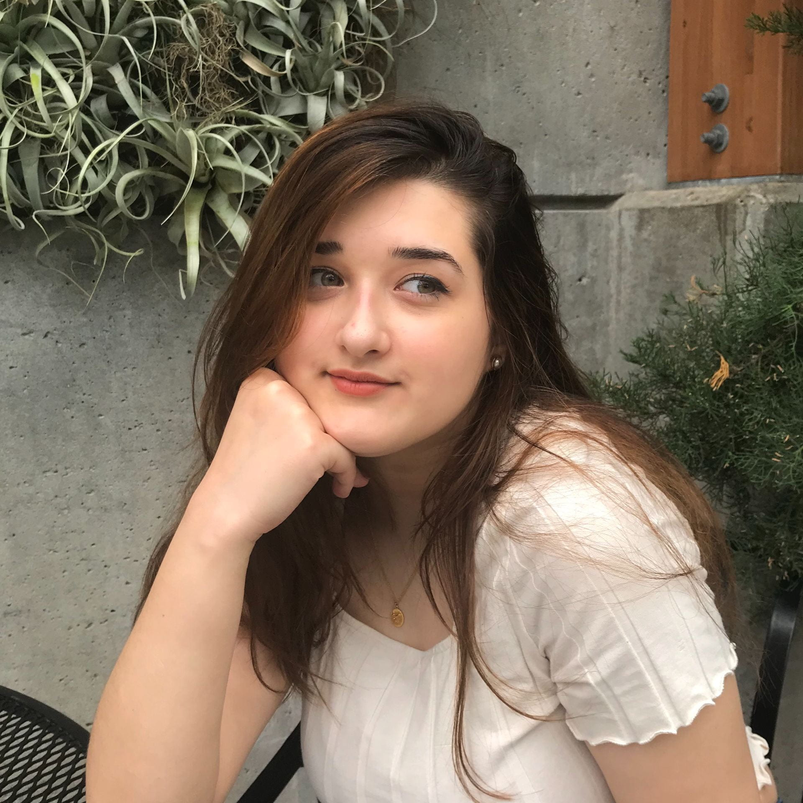
Master’s Student,
University of Giessen
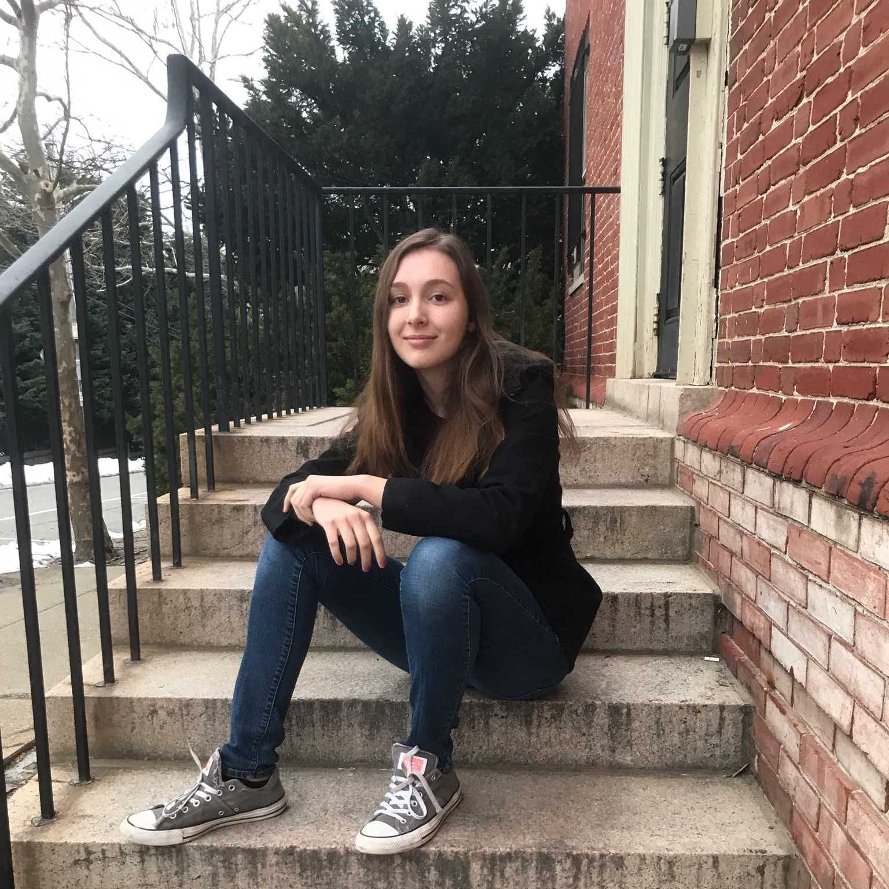
Graduate Student,
University of Giessen
Master’s Student,
UC Berkeley
Graduate Student,
John Hopkins University
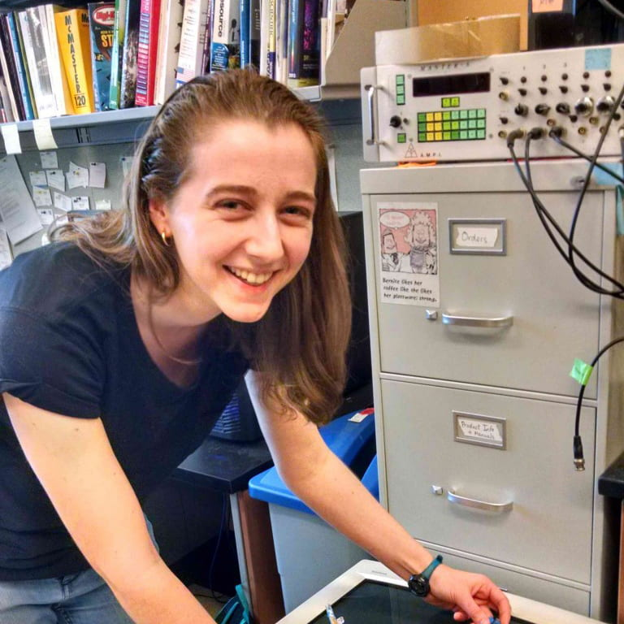
Graduate Student,
UC Berkeley
MBA Candidate,
Stanford Graduate School of Business
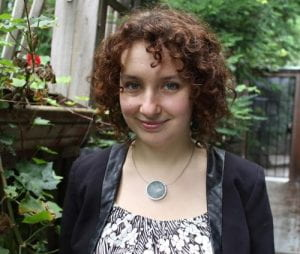
Senior UX Researcher,
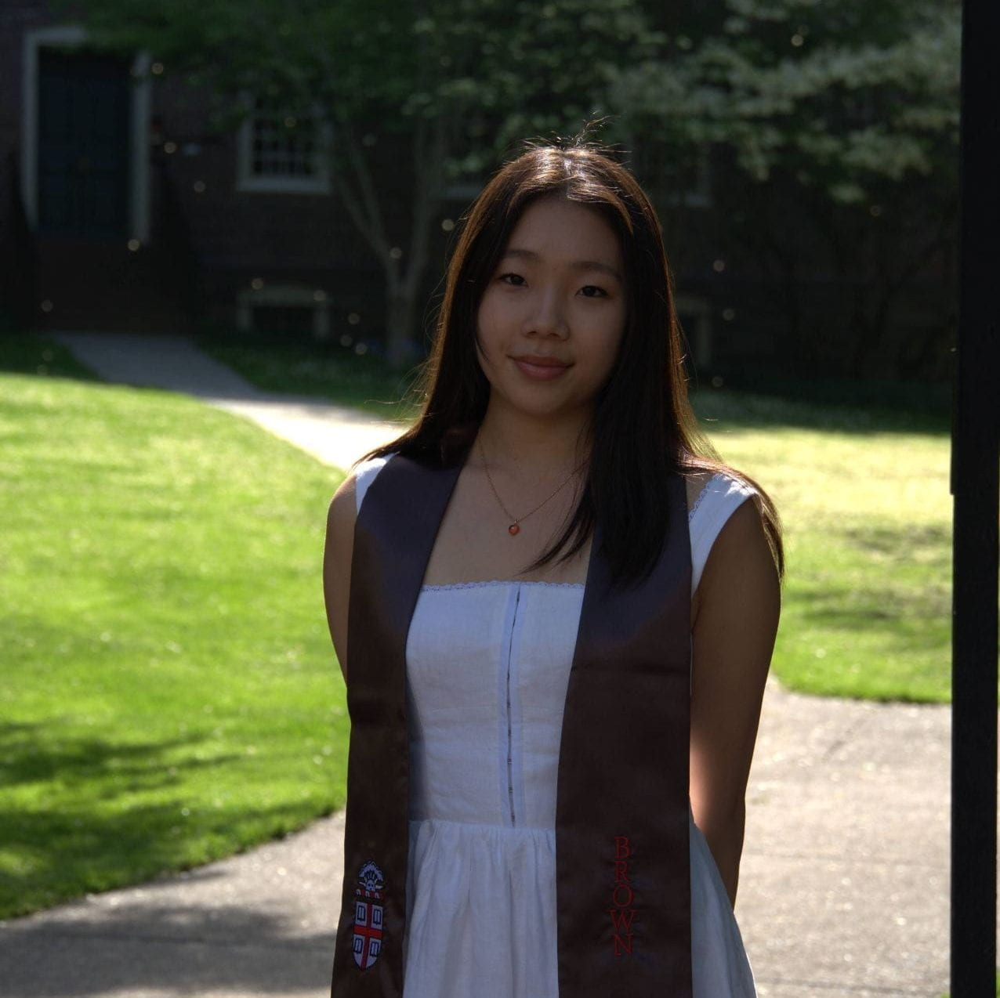
Alumni
Alumni